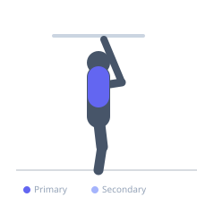
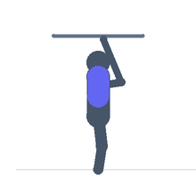

Exercise guide / Scapular Pull-Up on Rings
Scapular Pull-Up on Rings
The ring scapular pull-up is performed identically to the bar version — shoulder blades depressed and retracted without elbow flexion — but the unstable ring surface adds a rotational challenge that increases demand on the serratus anterior and rotator cuff stabilizers. It is a superior proprioceptive warm-up and shoulder health drill for ring athletes.
Primary muscles
latissimus dorsi
trapezius lower
Secondary muscles
rhomboid major
Stabilizers
erector spinae
Equipment
Gymnastic Rings


Starting position
- Hang from gymnastic rings at shoulder width with arms fully extended. Rings should be turned out slightly.
Setup
- Set ring height to allow full dead-hang with feet off the ground. Use a grip with palms facing each other (neutral grip).
Steps
- Step 1: Begin in a dead hang, body relaxed.
- Step 2: Without bending elbows, depress and retract the scapulae, elevating the body slightly.
- Step 3: Hold the depressed position 1-2 seconds.
- Step 4: Return slowly to the resting dead-hang.
- Step 5: Repeat.
Coaching cues
- Shoulder blades into your back pockets
- Arms stay straight throughout
- Control the rings — do not let them spin
Breathing
- Exhale as scapulae depress. Inhale returning to dead hang.
Range of motion
- Shoulder blades travel from resting elevated position to maximally depressed.
Tempo
- 1-2-1-0
Common mistakes
- Bending elbows — this defeats the purpose of the drill
- Allowing the rings to swing excessively — maintain control
Safety
- Inspect ring straps and anchor points before hanging
- Build wrist and grip tolerance before full dead hangs
Training
- rehabilitation: 10–20 reps
- rehabilitation: 3–4 sets
- Rest: {'rehabilitation': 60}